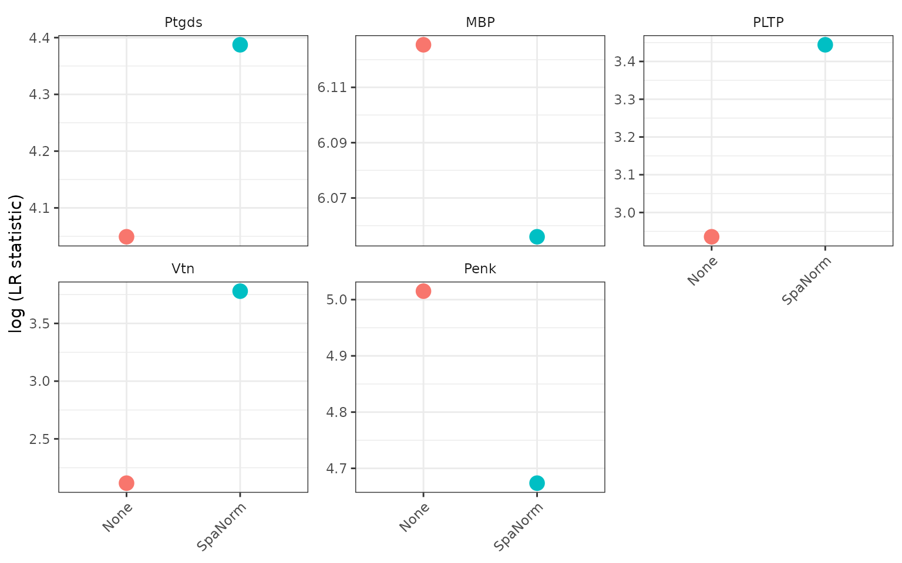
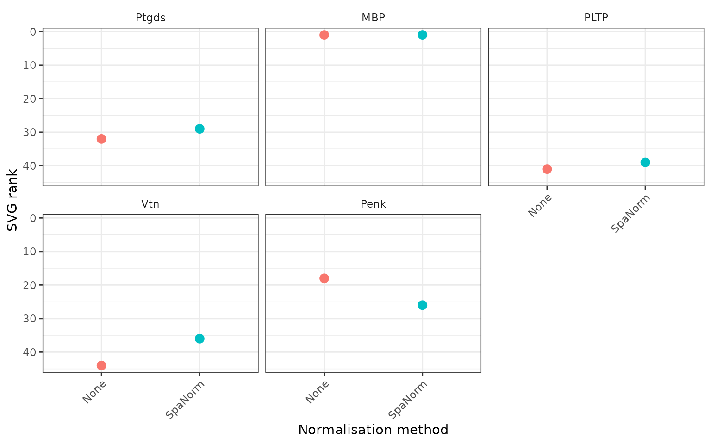
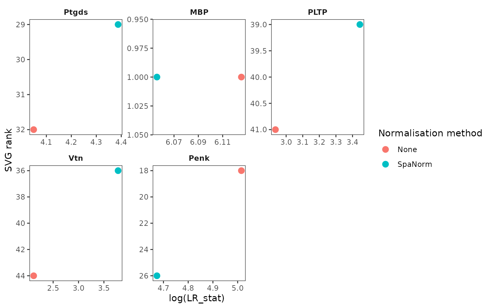
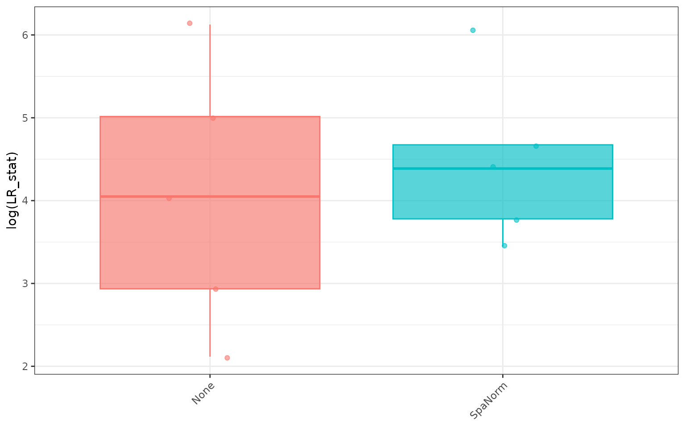
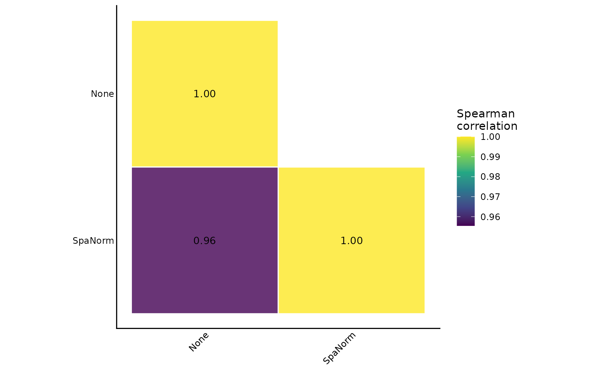
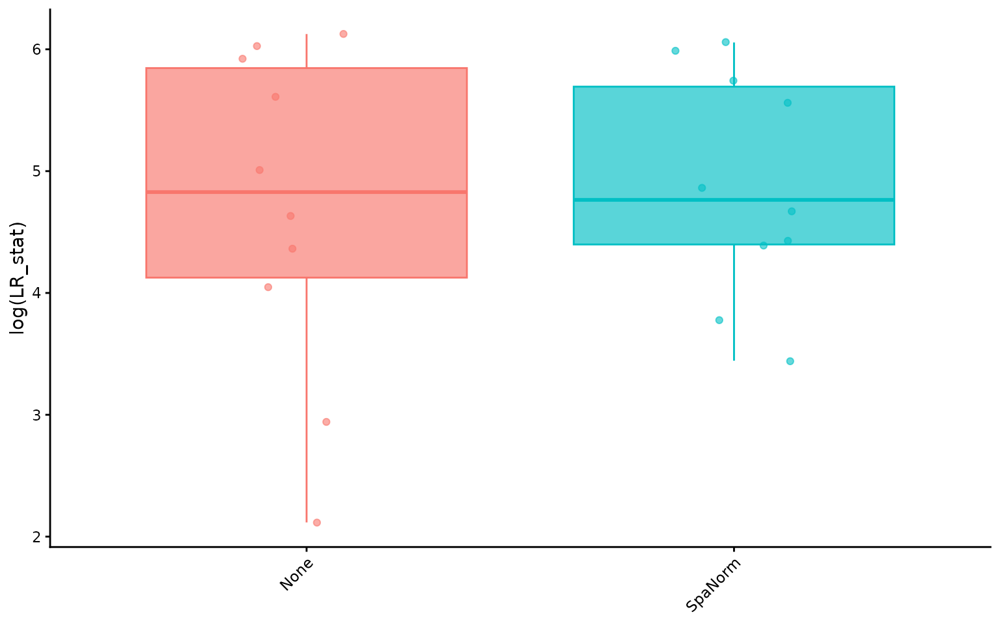
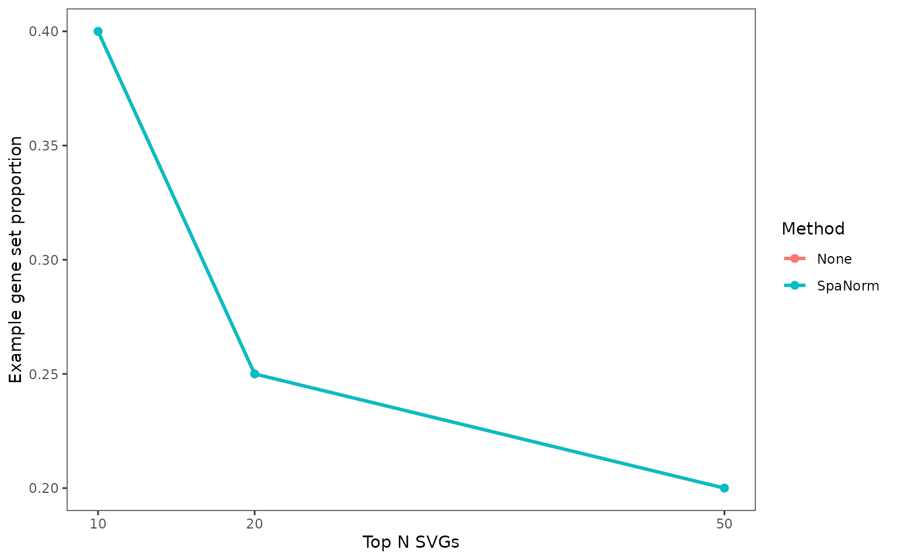
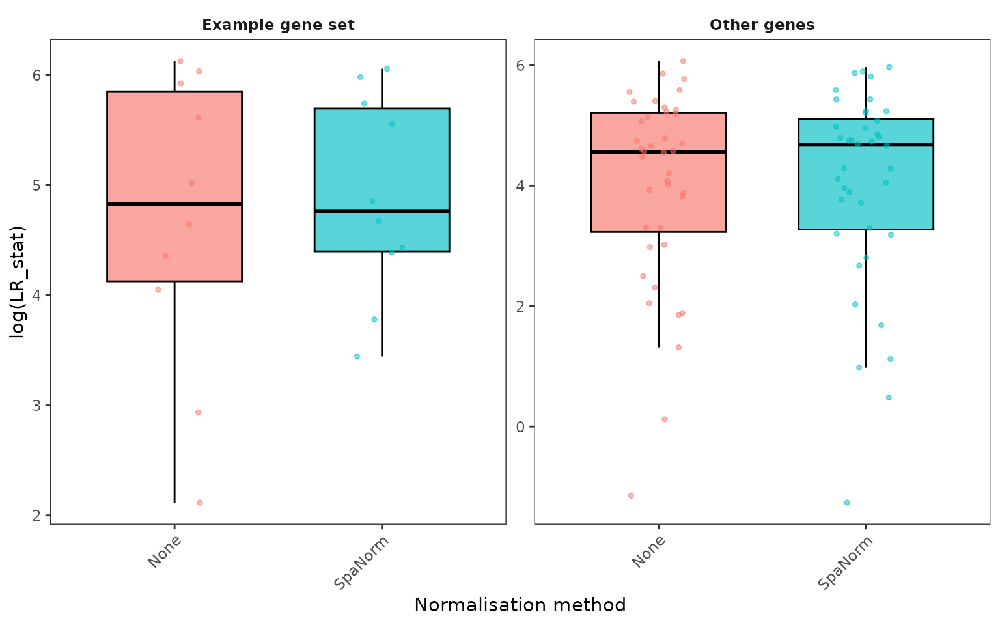
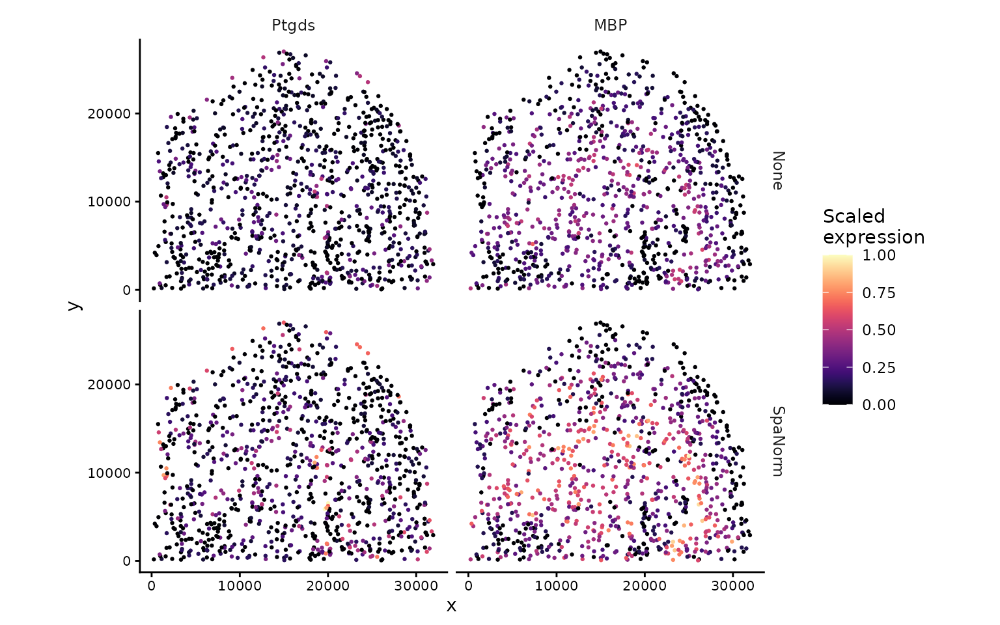

Introduction
We use the same SVG detection procedure for each normalised dataset
to examine how normalisation affects spatial variability statistics and
gene rankings. The supplied svg_example contains
precomputed results, avoiding repeated, potentially expensive nnSVG
calculations.
Detect spatially variable genes
To reproduce SVG detection from the normalised data, run the code below. The remaining sections use the supplied precomputed results.
svg_recomputed <- run_svg(
norm_list = norm,
method = "nnSVG",
n_threads = 1,
verbose = FALSE
)Evaluate biologically relevant marker genes
We evaluate example genes available in the SVG results rather than assuming that a particular tissue-marker panel is present in this small dataset.
common_genes <- Reduce(intersect, lapply(svg_norm, rownames))
marker_genes <- head(common_genes, 5)
marker_genes
#> [1] "Ptgds" "MBP" "PLTP" "Vtn" "Penk"Compare SVG statistics
Higher likelihood-ratio (LR) statistics indicate stronger statistical evidence of spatial variation.
if (length(marker_genes) > 0L) {
p_svg_markers <- plot_svg_stat(
svg_norm = svg_norm,
genes = marker_genes,
stat = "LR_stat",
transform = "log",
point_size = 4,
gene_id = "rownames",
theme_name = "bw"
)
p_svg_markers$plot
}
Compare SVG rankings
Smaller ranks indicate higher relative priority in SVG detection.
if (length(marker_genes) > 0L) {
p_svg_rank <- plot_svg_rank(
svg_norm = svg_norm,
genes = marker_genes,
point_size = 3,
gene_id = "rownames",
theme_name = "bw"
)
p_svg_rank$plot
}
Investigate SVG ranks against LR statistics
if (length(marker_genes) > 0L) {
p <- plot_svg_rank_vs_stat(
svg_norm = svg_norm,
genes = marker_genes,
stat = "LR_stat",
transform = "log",
scales = "free",
ncol = 3,
point_size = 3,
theme_name = "bw"
)
p$plot
}
Compare overall marker gene SVG statistics
if (length(marker_genes) > 0L) {
p_svg_mk <- plot_svg_gene_set_distribution(
svg_norm = svg_norm,
genes = marker_genes,
stat = "LR_stat",
gene_id = "rownames",
transform = "log",
plot_type = "boxplot",
add_jitter = TRUE,
point_size = 1.5,
theme_name = "bw"
)
p_svg_mk$plot
}
Evaluate SVG ranking consistency
Correlations are calculated using genes shared across the methods. Higher correlations indicate greater similarity in rankings.
p_cor <- plot_svg_rank_correlation(
svg_norm = svg_norm,
show_values = TRUE,
digits = 2,
theme_name = "classic"
)
p_cor$plot
Investigate housekeeping gene behaviour
Housekeeping genes are generally expected to exhibit relatively stable expression, although they are not necessarily spatially uniform. A tissue-specific, curated list is preferable in full analyses.
For a self-contained demonstration, we use a small subset of the available genes as an illustrative gene set. These genes are not claimed to be housekeeping genes.
example_gene_set <- head(common_genes, 10)
if (length(example_gene_set) > 0L) {
p_svg_set <- plot_svg_gene_set_distribution(
svg_norm = svg_norm,
genes = example_gene_set,
stat = "LR_stat",
gene_id = "rownames",
transform = "log",
plot_type = "boxplot",
add_jitter = TRUE,
point_size = 1.5,
theme_name = "classic"
)
p_svg_set$plot
}
Examine genes among top-ranked SVGs
if (length(example_gene_set) > 0L) {
p_topn <- plot_svg_topn_gene_set(
svg_norm = svg_norm,
genes = example_gene_set,
top_n = c(10, 20, 50),
gene_id = "rownames",
theme_name = "bw",
gene_set_name = "Example gene set"
)
p_topn$plot
}
Compare SVG statistics between gene sets
gene_sets <- list(
"Example gene set" = example_gene_set,
"Other genes" = setdiff(common_genes, example_gene_set)
)
if (all(lengths(gene_sets) > 0L)) {
p_svg_sets <- plot_svg_gene_sets(
svg_norm = svg_norm,
gene_sets = gene_sets,
stat = "LR_stat",
gene_id = "rownames",
transform = "log",
plot_type = "boxplot",
theme_name = "bw"
)
p_svg_sets$plot
}
Spatial expression of marker genes
Expression can be scaled between 0 and 1 by gene for comparing spatial patterns; unscaled values can also be plotted, but numerical scales need not be directly comparable across transformations.
if (length(marker_genes) > 0L) {
p_marker_maps <- plot_spatial_expression(
norm_list = norm,
genes = head(marker_genes, 2),
methods = names(norm),
assay_name = "logcounts",
scale_expr = TRUE,
scale_by = "gene",
point_size = 0.5,
colour_option = "magma",
ncol_genes = 1,
theme_name = "classic"
)
p_marker_maps$plot
}
Session information
sessionInfo()
#> R version 4.6.2 (2026-10-29)
#> Platform: x86_64-pc-linux-gnu
#> Running under: Ubuntu 26.04.1 LTS
#>
#> Matrix products: default
#> BLAS: /usr/lib/x86_64-linux-gnu/openblas-pthread/libblas.so.3
#> LAPACK: /usr/lib/x86_64-linux-gnu/openblas-pthread/libopenblasp-r0.3.32.so; LAPACK version 3.12.0
#>
#> locale:
#> [1] LC_CTYPE=C.UTF-8 LC_NUMERIC=C LC_TIME=C.UTF-8
#> [4] LC_COLLATE=C.UTF-8 LC_MONETARY=C.UTF-8 LC_MESSAGES=C.UTF-8
#> [7] LC_PAPER=C.UTF-8 LC_NAME=C LC_ADDRESS=C
#> [10] LC_TELEPHONE=C LC_MEASUREMENT=C.UTF-8 LC_IDENTIFICATION=C
#>
#> time zone: UTC
#> tzcode source: system (glibc)
#>
#> attached base packages:
#> [1] stats graphics grDevices utils datasets methods base
#>
#> other attached packages:
#> [1] STBench_0.99.8
#>
#> loaded via a namespace (and not attached):
#> [1] SummarizedExperiment_1.42.0 gtable_0.3.6
#> [3] rjson_0.2.23 xfun_0.62
#> [5] bslib_0.12.0 ggplot2_4.0.4
#> [7] htmlwidgets_1.6.4 Biobase_2.72.0
#> [9] lattice_0.23-1 vctrs_0.7.3
#> [11] tools_4.6.2 generics_0.1.4
#> [13] stats4_4.6.2 parallel_4.6.2
#> [15] tibble_3.3.1 pkgconfig_2.0.3
#> [17] Matrix_1.7-6 RColorBrewer_1.1-3
#> [19] S7_1.0.0 desc_1.4.3
#> [21] S4Vectors_0.50.3 sparseMatrixStats_1.24.0
#> [23] lifecycle_1.0.5 compiler_4.6.2
#> [25] farver_2.1.2 textshaping_1.1.0
#> [27] Seqinfo_1.2.0 codetools_0.2-20
#> [29] htmltools_0.5.9 sass_0.5.0
#> [31] yaml_2.3.12 pkgdown_2.2.1
#> [33] pillar_1.11.1 jquerylib_0.1.4
#> [35] BiocParallel_1.46.0 SingleCellExperiment_1.34.0
#> [37] DelayedArray_0.38.2 cachem_1.1.0
#> [39] viridis_0.6.5 BRISC_1.0.6
#> [41] magick_2.9.1 abind_1.4-8
#> [43] tidyselect_1.2.1 digest_0.6.39
#> [45] dplyr_1.2.1 labeling_0.4.3
#> [47] fastmap_1.2.0 grid_4.6.2
#> [49] cli_3.6.6 SparseArray_1.12.3
#> [51] magrittr_2.0.5 S4Arrays_1.12.1
#> [53] withr_3.0.3 scales_1.4.0
#> [55] rmarkdown_2.32 XVector_0.52.0
#> [57] matrixStats_1.5.0 otel_0.3.0
#> [59] gridExtra_2.3.1 RANN_2.6.3
#> [61] nnSVG_1.16.1 ragg_1.5.2
#> [63] SpatialExperiment_1.22.0 pbapply_1.7-5
#> [65] evaluate_1.0.5 knitr_1.52
#> [67] GenomicRanges_1.64.0 IRanges_2.46.0
#> [69] viridisLite_0.4.3 rlang_1.3.0
#> [71] Rcpp_1.1.2 rdist_0.0.6
#> [73] glue_1.8.1 BiocGenerics_0.58.1
#> [75] jsonlite_2.0.0 R6_2.6.1
#> [77] MatrixGenerics_1.24.0 systemfonts_1.3.4
#> [79] fs_2.1.0